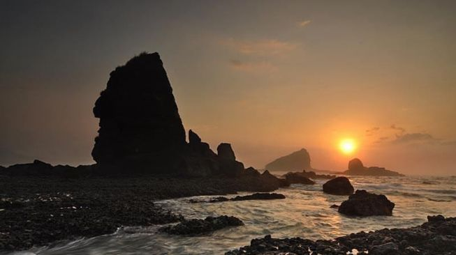

<!DOCTYPE html>
<html lang="en">
  <head>
    <!-- Required meta tags -->
    <meta charset="utf-8" />
    <meta name="viewport" content="width=device-width, initial-scale=1, shrink-to-fit=no" />
	<title>Eksotisme Watu Ulo: Destinasi Wisata Alam yang Kaya Akan Legenda</title>
	<meta name="description" content="Pantai Watu Ulo: Destinasi Wisata Alam yang Kaya Akan Legenda">
    <meta name="keywords" content="Pantai Watu Ulo, Wisata Jember, Explore Jatim, Wisata Jawa Timur">
	<meta name="author" content="Explore Jatim" />

	<!-- Open Graph Meta Tags -->
    <meta property="og:title" content="Pantai Watu Ulo: Destinasi Wisata Alam yang Kaya Akan Legenda" />
    <meta property="og:type" content="article" />
    <meta property="og:image" content="https://explorejatim.web.id/img/watuulo.jpg" />
    <meta property="og:url" content="https://explorejatim.web.id/watu-ulo.html" />

    <!-- Bootstrap & Font Awesome CSS -->
    <link rel="stylesheet" href="bootstrap/css/bootstrap.min.css" />
    <link rel="stylesheet" href="font-awesome/css/all.css" />

    <!-- Custom CSS -->
    <link rel="stylesheet" href="css/main.css" />
    <style>.navbar .nav-link {
      color: rgb(255, 217, 0) !important; /* Mengatur warna font menjadi hitam */
    }
  
    .navbar .navbar-brand {
      color: rgb(255, 196, 0) !important; /* Mengatur warna font pada brand menjadi hitam */
    }</style>

    <!-- Google Fonts -->
    <link rel="preconnect" href="https://fonts.gstatic.com" />
    <link rel="preconnect" href="https://fonts.gstatic.com" />
    <link href="https://fonts.googleapis.com/css2?family=Playfair+Display:wght@800&family=Poppins:wght@400;500;600&display=swap" rel="stylesheet" />

  </head>

  <body>
    <!-- Navbar -->
    <nav class="navbar navbar-expand-lg navbar-light bg-light fixed-top py-3">
      <div class="container">
        <a class="navbar-brand" href="index.html">
          <i class="fas fa-paper-plane mr-2"></i>
          Explore Jatim
        </a>
        <button class="navbar-toggler" type="button" data-toggle="collapse" data-target="#navbarNavAltMarkup" aria-controls="navbarNavAltMarkup" aria-expanded="false" aria-label="Toggle navigation">
          <span class="navbar-toggler-icon"></span>
        </button>
        <div class="collapse navbar-collapse" id="navbarNavAltMarkup">
          <div class="navbar-nav ml-auto">
            <a class="nav-link page-scroll" href="/">Tentang Kami</a>
            <a class="nav-link page-scroll" href="/">Galeri</a>
            <a class="nav-link page-scroll" href="/">Populer Trip</a>
            <a class="nav-link page-scroll" href="https://wa.me/62895639068080" target="_blank">Contact</a>
            <a class="nav-link page-scroll" href="blog.html">Blog</a>
          </div>
        </div>
      </div>
    </nav>
    <br />
    <!-- Akhir Navbar -->
    <section id="artikel-tengah" class="py-5">
      <div class="container">
        <div class="row justify-content-center">
          <div class="col-lg-8">
            
              
              <div class="card-body">
                <h1 class="card-title font-weight-bold">Eksotisme Watu Ulo: Destinasi Wisata Alam yang Kaya Akan Legenda</h1>
                <p><span style="font-family: Montserrat;"><span face="&quot;Open Sans&quot;, sans-serif">Watu
Ulo merupakan bagian dari gugusan pantai selatan Jawa yang terkenal dengan
ombak besar dan pemandangan pantai yang menakjubkan. Nama&nbsp;</span><b>"Watu
Ulo"</b><span face="&quot;Open Sans&quot;, sans-serif">&nbsp;berasal dari bahasa Jawa yang berarti "Batu Ular".</span></span></p>

<p class="MsoNormal" style="line-height: 115%;"><span face="&quot;Open Sans&quot;,sans-serif" style="font-family: Montserrat;">Nama
ini mengacu pada formasi bebatuan panjang yang menyerupai tubuh ular yang
terhampar di pesisir pantai. Fenomena geologi ini menjadi ikon utama pantai dan
daya tarik wisatawan.<o:p></o:p></span></p>

<p class="MsoNormal" style="line-height: 115%;"><span face="&quot;Open Sans&quot;,sans-serif" style="font-family: Montserrat;">Pantai
Watu Ulo memiliki pasir hitam dengan tekstur halus yang berpadu dengan bebatuan
alami. Selain itu, suara deburan ombak yang menghantam batu memberikan suasana
tenang dan menjadi terapi alami bagi pengunjung yang ingin melepas penat dari
rutinitas sehari-hari.<o:p></o:p></span></p>

<p class="MsoNormal" style="line-height: 115%;"><span face="&quot;Open Sans&quot;,sans-serif" style="font-family: Montserrat;">Di
sekitar pantai, terdapat bukit-bukit hijau yang menjadi latar belakang menawan.
Pengunjung juga dapat menikmati matahari terbenam yang indah di sini. <o:p></o:p></span></p>

<p class="MsoNormal" style="line-height: 115%;"><span face="&quot;Open Sans&quot;,sans-serif" style="font-family: Montserrat;">Saat
senja, langit pantai berubah menjadi palet warna oranye, merah, dan ungu yang
menciptakan suasana romantis dan dramatis.<o:p></o:p></span></p>

<p class="MsoNormal" style="line-height: 115%;"><span face="&quot;Open Sans&quot;,sans-serif" style="font-family: Montserrat;"><o:p>&nbsp;</o:p></span></p>

<h2 style="line-height: 115%;"><b><span face="&quot;Open Sans&quot;,sans-serif" style="font-family: Montserrat;">Legenda
di Balik Nama Watu Ulo<o:p></o:p></span></b></h2>

<p class="MsoNormal" style="line-height: 115%;"><span face="&quot;Open Sans&quot;,sans-serif" style="font-family: Montserrat;">Seperti
banyak tempat lain di Indonesia, Pantai Watu Ulo juga dikelilingi oleh cerita
legenda yang menarik. Salah satu cerita paling populer adalah tentang seekor
naga besar yang tinggal di kawasan tersebut.<o:p></o:p></span></p>

<p class="MsoNormal" style="line-height: 115%;"><span face="&quot;Open Sans&quot;,sans-serif" style="font-family: Montserrat;">Menurut
legenda, dahulu kala ada seekor naga bernama&nbsp;<b>Nogo Rojo</b>&nbsp;yang
tinggal di kawasan pantai selatan. Naga ini bertarung dengan seorang pahlawan
lokal untuk merebut wilayah tersebut. <o:p></o:p></span></p>

<p class="MsoNormal" style="line-height: 115%;"><span face="&quot;Open Sans&quot;,sans-serif" style="font-family: Montserrat;">Dalam
pertarungan yang sengit, sang naga kalah dan tubuhnya terpotong-potong.
Sisa-sisa tubuh naga itulah yang kemudian dipercaya menjadi batu ular (Watu
Ulo) yang sekarang kita lihat di pantai ini.<o:p></o:p></span></p>

<p class="MsoNormal" style="line-height: 115%;"><span face="&quot;Open Sans&quot;,sans-serif" style="font-family: Montserrat;">Cerita
ini menjadi daya tarik tersendiri, terutama bagi wisatawan yang menyukai
kisah-kisah mistis dan budaya lokal. <o:p></o:p></span></p>

<p class="MsoNormal" style="line-height: 115%;"><span face="&quot;Open Sans&quot;,sans-serif" style="font-family: Montserrat;">Banyak
penduduk setempat percaya bahwa tempat ini memiliki energi spiritual yang kuat,
dan beberapa pengunjung datang untuk mencari berkah atau melakukan ritual
tertentu.<o:p></o:p></span></p>

<p class="MsoNormal" style="line-height: 115%;"><b><span face="&quot;Open Sans&quot;,sans-serif" style="font-family: Montserrat;"><o:p></o:p></span></b></p><blockquote><b><span style="font-family: Montserrat;"><span face="&quot;Open Sans&quot;,sans-serif"><o:p>Baca juga:&nbsp;</o:p></span><span face="Open Sans, sans-serif"><a href="https://explorejatim.web.id/papuma-beach" target="_blank">Pantai Papuma Surga Tersembunyi di Selatan Jawa Timur</a></span></span></b></blockquote><b><span face="Open Sans, sans-serif" style="font-family: Montserrat;"><a href="http://papuma-beach.html" target="_blank"></a></span></b><p></p>

<p style="line-height: 115%; text-align: left;"><b><span face="&quot;Open Sans&quot;,sans-serif" style="font-family: Montserrat;"><br /></span></b></p><h2 style="line-height: 115%;"><b><span face="&quot;Open Sans&quot;,sans-serif" style="font-family: Montserrat;">Aktivitas
Wisata di Pantai Watu Ulo<o:p></o:p></span></b></h2>

<p class="MsoNormal" style="line-height: 115%;"><span face="&quot;Open Sans&quot;,sans-serif" style="font-family: Montserrat;">Watu
Ulo tidak hanya menawarkan pemandangan alam yang memukau, tetapi juga berbagai
aktivitas wisata yang bisa dilakukan. Berikut adalah beberapa kegiatan yang
dapat Anda nikmati saat berkunjung ke sini:<o:p></o:p></span></p>

<p class="MsoNormal" style="line-height: 115%;"><span face="&quot;Open Sans&quot;,sans-serif" style="font-family: Montserrat;">1.&nbsp;<b>Berenang
dan Bermain di Pantai</b><o:p></o:p></span></p>

<p class="MsoNormal" style="line-height: 115%;"><span face="&quot;Open Sans&quot;,sans-serif" style="font-family: Montserrat;">Meskipun
ombak di pantai selatan terkenal besar, terdapat beberapa area yang relatif
aman untuk berenang. Pengunjung juga bisa bermain pasir bersama keluarga atau
sekadar bersantai menikmati angin laut.<o:p></o:p></span></p>

<p class="MsoNormal" style="line-height: 115%;"><span face="&quot;Open Sans&quot;,sans-serif" style="font-family: Montserrat;">2.&nbsp;<b>Berfoto
di Formasi Watu Ulo</b><o:p></o:p></span></p>

<p class="MsoNormal" style="line-height: 115%;"><span face="&quot;Open Sans&quot;,sans-serif" style="font-family: Montserrat;">Ikon
utama pantai ini, yaitu formasi batu ular, menjadi latar foto favorit bagi
wisatawan. Bentuknya yang unik memberikan nilai estetika tersendiri, terutama
saat diabadikan dengan latar belakang laut biru.<o:p></o:p></span></p>

<p class="MsoNormal" style="line-height: 115%;"><span face="&quot;Open Sans&quot;,sans-serif" style="font-family: Montserrat;">3.&nbsp;<b>Mencicipi
Kuliner Laut</b><o:p></o:p></span></p>

<p class="MsoNormal" style="line-height: 115%;"><span face="&quot;Open Sans&quot;,sans-serif" style="font-family: Montserrat;">Di
sekitar pantai, terdapat warung-warung kecil yang menyajikan makanan khas laut
seperti ikan bakar, cumi-cumi, dan udang segar. Rasanya yang lezat dengan harga
terjangkau membuat pengalaman kuliner di sini tak terlupakan.<o:p></o:p></span></p>

<p class="MsoNormal" style="line-height: 115%;"><span face="&quot;Open Sans&quot;,sans-serif" style="font-family: Montserrat;">4.&nbsp;<b>Menyusuri
Goa Jepang</b><o:p></o:p></span></p>

<p class="MsoNormal" style="line-height: 115%;"><span face="&quot;Open Sans&quot;,sans-serif" style="font-family: Montserrat;">Tidak
jauh dari Pantai Watu Ulo, terdapat goa-goa peninggalan Jepang yang digunakan
sebagai tempat persembunyian pada masa Perang Dunia II. Goa-goa ini menjadi
daya tarik tambahan bagi wisatawan yang ingin menjelajahi sejarah.<o:p></o:p></span></p>

<p class="MsoNormal" style="line-height: 115%;"><span face="&quot;Open Sans&quot;,sans-serif" style="font-family: Montserrat;">5.&nbsp;<b>Mengunjungi
Pantai Tetangga</b><o:p></o:p></span></p>

<p class="MsoNormal" style="line-height: 115%;"><span face="&quot;Open Sans&quot;,sans-serif" style="font-family: Montserrat;">Pantai
Watu Ulo berdekatan dengan beberapa pantai lain yang juga indah, seperti Pantai
Papuma. Anda bisa menjelajahi beberapa pantai dalam satu perjalanan untuk
pengalaman wisata yang lebih kaya.<o:p></o:p></span></p>

<p class="MsoNormal" style="line-height: 115%;"><span face="&quot;Open Sans&quot;,sans-serif" style="font-family: Montserrat;"><o:p>&nbsp;</o:p></span></p>

<p class="MsoNormal" style="line-height: 115%;"><span style="font-family: Montserrat;"><b><span face="&quot;Open Sans&quot;,sans-serif">Fasilitas
dan Aksesibilitas</span></b><span face="&quot;Open Sans&quot;,sans-serif"><o:p></o:p></span></span></p>

<p class="MsoNormal" style="line-height: 115%;"><span face="&quot;Open Sans&quot;,sans-serif" style="font-family: Montserrat;">Watu
Ulo memiliki fasilitas wisata yang cukup memadai. Area parkir, kamar mandi, dan
warung makan tersedia untuk kenyamanan pengunjung. <o:p></o:p></span></p>

<p class="MsoNormal" style="line-height: 115%;"><span face="&quot;Open Sans&quot;,sans-serif" style="font-family: Montserrat;">Bagi
Anda yang ingin menghabiskan lebih banyak waktu di sini, terdapat penginapan
sederhana di sekitar pantai atau di kawasan Jember.<o:p></o:p></span></p>

<p class="MsoNormal" style="line-height: 115%;"><span face="&quot;Open Sans&quot;,sans-serif" style="font-family: Montserrat;">Untuk
mencapai Watu Ulo, Anda dapat menggunakan kendaraan pribadi maupun transportasi
umum. Lokasinya sekitar&nbsp;<b>40 kilometer dari pusat Kota Jember</b>, dan
perjalanan dapat ditempuh dalam waktu sekitar satu jam. <o:p></o:p></span></p>

<p class="MsoNormal" style="line-height: 115%;"><span face="&quot;Open Sans&quot;,sans-serif" style="font-family: Montserrat;">Rute
menuju pantai sudah beraspal dengan pemandangan pedesaan yang menyenangkan.<o:p></o:p></span></p>

<p class="MsoNormal" style="line-height: 115%;"><span face="&quot;Open Sans&quot;,sans-serif" style="font-family: Montserrat;"><o:p>&nbsp;</o:p></span></p>

<h2 style="line-height: 115%;"><b><span face="&quot;Open Sans&quot;,sans-serif" style="font-family: Montserrat;">Tips
Berwisata ke Watu Ulo<o:p></o:p></span></b></h2>

<p class="MsoNormal" style="line-height: 115%;"><span face="&quot;Open Sans&quot;,sans-serif" style="font-family: Montserrat;">Agar
pengalaman wisata Anda di Pantai Watu Ulo lebih maksimal, berikut beberapa tips
yang dapat Anda ikuti:<o:p></o:p></span></p>

<ol start="1" style="margin-top: 0in;" type="1">
 <li class="MsoNormal" style="line-height: 115%; mso-list: l0 level1 lfo1; tab-stops: list .5in;"><span style="font-family: Montserrat;"><b><span face="&quot;Open Sans&quot;,sans-serif">Perhatikan
     Waktu Kunjungan</span></b><span face="&quot;Open Sans&quot;,sans-serif"><br />
     Disarankan untuk mengunjungi pantai ini pada pagi atau sore hari untuk
     menghindari terik matahari. Selain itu, waktu terbaik untuk menikmati
     keindahan pantai adalah saat cuaca cerah.<o:p></o:p></span></span></li>
 <li class="MsoNormal" style="line-height: 115%; mso-list: l0 level1 lfo1; tab-stops: list .5in;"><span style="font-family: Montserrat;"><b><span face="&quot;Open Sans&quot;,sans-serif">Bawa
     Perlengkapan Tambahan</span></b><span face="&quot;Open Sans&quot;,sans-serif"><br />
     Karena pantai ini memiliki pasir hitam yang bisa menyerap panas, gunakan
     alas kaki yang nyaman. Jangan lupa membawa sunblock, kacamata hitam, dan
     topi untuk melindungi diri dari sinar matahari.<o:p></o:p></span></span></li>
 <li class="MsoNormal" style="line-height: 115%; mso-list: l0 level1 lfo1; tab-stops: list .5in;"><span style="font-family: Montserrat;"><b><span face="&quot;Open Sans&quot;,sans-serif">Jaga
     Kebersihan</span></b><span face="&quot;Open Sans&quot;,sans-serif"><br />
     Sebagai pengunjung, pastikan Anda turut menjaga keindahan dan kelestarian
     pantai dengan tidak membuang sampah sembarangan.<o:p></o:p></span></span></li>
 <li class="MsoNormal" style="line-height: 115%; mso-list: l0 level1 lfo1; tab-stops: list .5in;"><span style="font-family: Montserrat;"><b><span face="&quot;Open Sans&quot;,sans-serif">Hati-hati
     dengan Ombak</span></b><span face="&quot;Open Sans&quot;,sans-serif"><br />
     Pantai Watu Ulo termasuk dalam kawasan pantai selatan yang terkenal dengan
     ombak besar. Pastikan Anda selalu berhati-hati dan mengikuti arahan
     petugas setempat.<o:p></o:p></span></span></li>
 <li class="MsoNormal" style="line-height: 115%; mso-list: l0 level1 lfo1; tab-stops: list .5in;"><span style="font-family: Montserrat;"><b><span face="&quot;Open Sans&quot;,sans-serif">Nikmati
     Kuliner Lokal</span></b><span face="&quot;Open Sans&quot;,sans-serif"><br />
     Jangan lewatkan kesempatan untuk mencicipi kuliner khas Jember di sekitar
     pantai. Selain makanan laut, Anda juga bisa mencoba makanan khas seperti
     tape Jember dan suwar-suwir.<o:p></o:p></span></span></li>
</ol>

<p class="MsoNormal" style="line-height: 115%;"><span face="&quot;Open Sans&quot;,sans-serif" style="font-family: Montserrat;">Pantai
Watu Ulo merupakan destinasi wisata yang menawarkan keindahan alam, cerita
legenda, dan berbagai aktivitas menarik. Dengan pemandangan unik berupa
bebatuan yang menyerupai tubuh ular, pantai ini menjadi tempat yang wajib
dikunjungi bagi Anda yang sedang berada di Jember atau sekitarnya.<o:p></o:p></span></p>

<p class="MsoNormal" style="line-height: 115%;"><span face="&quot;Open Sans&quot;,sans-serif" style="font-family: Montserrat;">Selain
menikmati keindahan alamnya, Anda juga bisa mengenal lebih dalam tentang budaya
lokal dan sejarah yang melekat pada pantai ini. Dengan fasilitas yang memadai
dan akses yang cukup mudah, Watu Ulo siap menjadi destinasi liburan Anda
berikutnya.<o:p></o:p></span></p>

<p class="MsoNormal" style="line-height: 115%;"><span face="&quot;Open Sans&quot;,sans-serif"><span style="font-family: Montserrat;">Jadi,
tunggu apa lagi? Rencanakan perjalanan Anda ke Pantai Watu Ulo dan nikmati
pengalaman tak terlupakan di salah satu surga tersembunyi di Jawa Timur!</span><o:p></o:p></span></p>
            </div>
            </div>
          </div>
        </div>
      </div>
    </section>
    <!-- Footer -->
    <footer class="footer">
      <div class="container">
        <div class="row justify-content-between py-5">
          <div class="col-7 col-lg-4">
			
          </div>
          <div class="col-5 col-md-3 col-lg-auto">
            <nav class="nav">
              <a class="nav-link page-scroll" href="/">Popular Trip</a>
              <a class="nav-link page-scroll mr-0" href="https://wa.me/62895639068080" target="_blank">WhatsApp</a>
            </nav>
          </div>
        </div>
      </div>
    </footer>
    <!-- Akhir Footer -->
    <script src="js/jquery-3.5.1.min.js"></script>
    <script src="bootstrap/js/bootstrap.bundle.min.js"></script>
    <script src="js/script.js"></script>
  </body>
</html>
